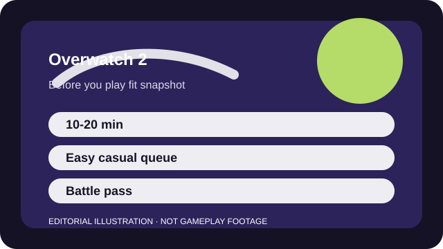

BEFORE YOU PLAY
What this page is and is not
This is a sourced editorial fit profile. It is designed to help with a yes-or-no play decision, and it does not claim a scored hands-on review.
The fit comes down to whether you enjoy adapting on the fly. If hero swapping sounds interesting rather than annoying, the game opens up quickly. If you want one unchanging role script, it can feel slippery.
The first-session loop to judge is simple: Take or defend objectives, swap heroes when a matchup asks for it, and coordinate ultimates well enough to win team fights.
The real improvement loop is understanding matchups and timing rather than grinding account power.

FIT SNAPSHOT
Overwatch 2 at a glance
| Genre | Hero shooter |
|---|---|
| Platforms | PC, PlayStation, Xbox, Switch |
| Business model | Free-to-play hero shooter with battle passes and cosmetic monetization. |
| Typical session | 10-20 minute matches that are easy to sample casually. |
| Play style | objective-based hero combat |
| Learning barrier | The basics are accessible, but hero counters, ult economy, and role pressure matter more as soon as you care about consistency. |
| Social shape | Overwatch 2 is easy to queue casually, though the match quality improves when teammates ping or talk around plans instead of reacting alone. |
WHO IT FITS
Best fit, likely friction, and the social reality
players who like fast objective fights, hero swapping, and readable team roles
players who want one loadout to master without mid-match adaptation
Overwatch 2 is easy to queue casually, though the match quality improves when teammates ping or talk around plans instead of reacting alone.
The real improvement loop is understanding matchups and timing rather than grinding account power.
FIRST SESSION PLAN
How to test the fit in one evening
- Play Quick Play before you let ranked expectations distort the first impression.
- Choose one comfortable tank, support, and damage hero instead of trying the whole roster at once.
- Learn the objective UI and when your team actually has numbers before spending ultimates.
- Try hero swapping only after you know what problem the swap is supposed to solve.
Use the first session to answer these fit questions instead of judging rank, win rate, or store value immediately.
- Do you like changing plans mid-match instead of one static build?
- Will role queue make the game more readable or more restrictive for you?
- Do you prefer team-fight rhythm over one-life round tension?
TIME, COST, AND COMMITMENT
What you are really signing up for
| Session budget | 10-20 minute matches that are easy to sample casually. |
|---|---|
| Social demand | Overwatch 2 is easy to queue casually, though the match quality improves when teammates ping or talk around plans instead of reacting alone. |
| Progression shape | The real improvement loop is understanding matchups and timing rather than grinding account power. |
| Spending pressure | Access is free. Battle passes and cosmetic shop items are the core monetization pressure. |
Quick Play is easy to sample, but meaningful role confidence still asks for repeated map and matchup learning.
Access is free. Battle passes and cosmetic shop items are the core monetization pressure.
SOURCES AND LIMITS
What was checked, and what can change
- Hero balance and role expectations can move aggressively between seasons.
- New heroes or modes can reshape the beginner path.
- Battle-pass structures and seasonal cosmetics are separate from the core objective loop.
This profile uses official game pages and defensible general product knowledge to frame the player fit. It does not claim live testing across every platform, accessibility need, or current event rotation.